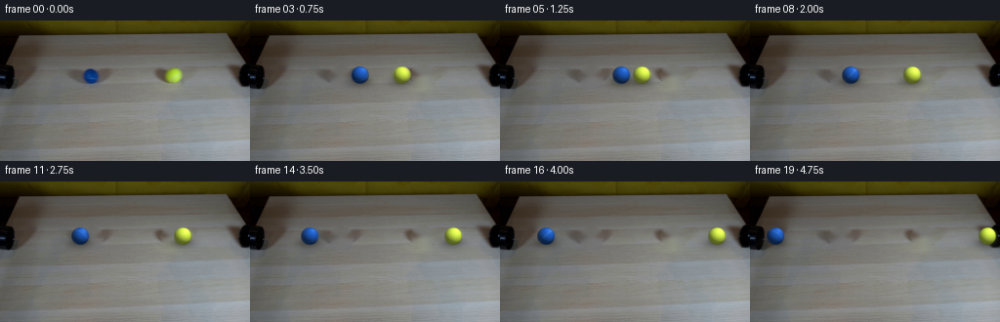
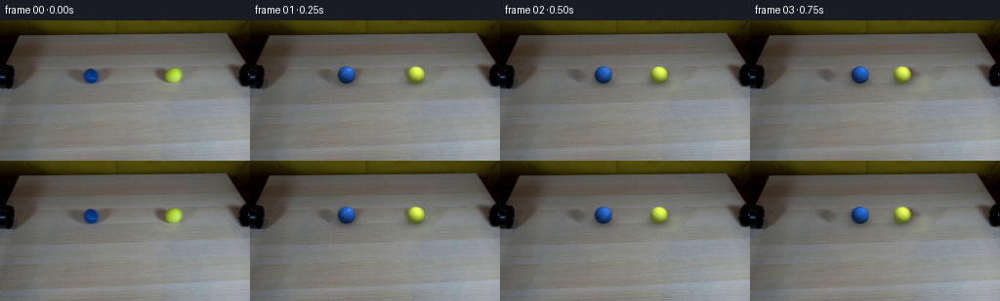
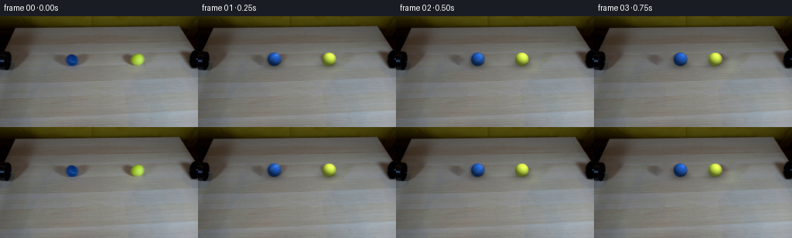
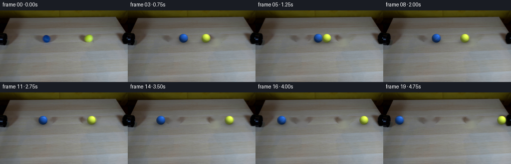
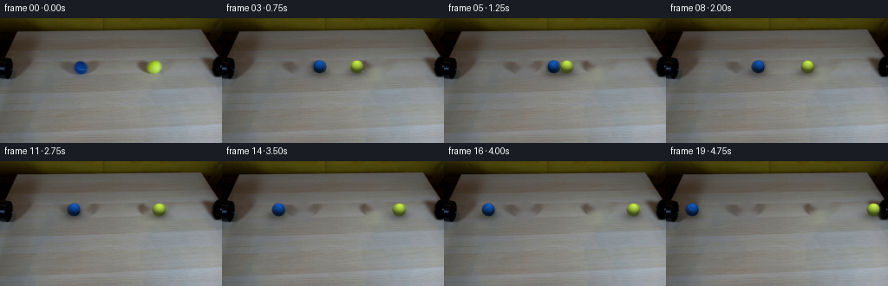
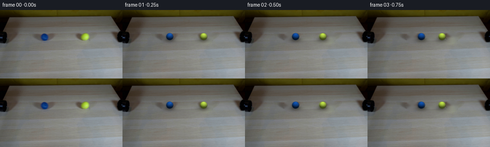
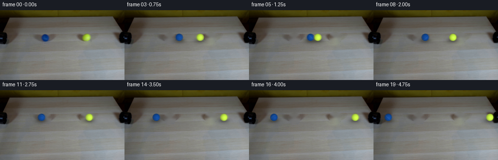

← 本轮 smoke 总览traex/DeepSeek-V4.1-Flash · 0032
text · 256×144 · 4.0 FPS · 20 帧 · 状态 failed · 输出 tokens 50228
原始任务Static locked-off single-shot with fixed frame throughout filmed with constant framerate in real-time. The scene shows a realistic scientific demonstration. The scene only contains the described setup and actions. A light-colored wooden tabletop with two pipes at the edges. The blue and the yellow tennis ball roll out of the pipes and collide with the same speed.
当前保存结果
此结果可播放，但该运行尚未通过最终提交审核。页面展示不代表评测通过。
已保存候选与代码修改
这里按时间展示外部捕获的候选，每份均可单独播放。保存新版本不等于完成视觉检查；下方工具证据记录实际看过的图。
候选 01 · 2026-11-08T22:41:34.643102+00:00 · 点开播放与检查图
inspection.png

transition_check.png

代码变化
--- 上一保存版本
+++ 本次保存版本
@@ -0,0 +1,219 @@
+from pathlib import Path
+
+import cv2
+import numpy as np
+from PIL import Image
+
+import artifact_io
+
+
+WIDTH = 256
+HEIGHT = 144
+FRAMES = 20
+FPS = 4
+
+BLUE_START = np.array([92.72, 56.95], dtype=np.float64)
+YELLOW_START = np.array([177.02, 56.04], dtype=np.float64)
+BALL_RADIUS = 8.8
+SPEED = 7.0
+CONTACT_Y = 56.50
+
+
+def _smoothstep(edge0, edge1, value):
+ t = np.clip((value - edge0) / (edge1 - edge0), 0.0, 1.0)
+ return t * t * (3.0 - 2.0 * t)
+
+
+def _clean_plate(source):
+ mask = np.zeros((HEIGHT, WIDTH), dtype=np.uint8)
+ for center in (BLUE_START, YELLOW_START):
+ cv2.ellipse(
+ mask,
+ tuple(np.round(center).astype(int)),
+ (13, 11),
+ 0,
+ 0,
+ 360,
+ 255,
+ -1,
+ )
+ return cv2.inpaint(source, mask, 5, cv2.INPAINT_TELEA)
+
+
+def _trajectory(frame_index):
+ # Equal masses and equal speeds give a symmetric rebound at contact.
+ contact_time = (YELLOW_START[0] - BLUE_START[0] - 2.0 * BALL_RADIUS) / (2.0 * SPEED)
+ t = float(frame_index)
+ travel = min(t, 2.0 * contact_time - t)
+
+ blue = np.array([BLUE_START[0] + SPEED * travel, CONTACT_Y])
+ yellow = np.array([YELLOW_START[0] - SPEED * travel, CONTACT_Y])
+
+ if t <= contact_time:
+ velocity = np.array([SPEED, 0.0])
+ else:
+ velocity = np.array([-SPEED, 0.0])
+ return blue, yellow, velocity
+
+
+def _sphere_texture(px, py, pz, palette, angle):
+ cos_a = np.cos(angle)
+ sin_a = np.sin(angle)
+
+ # Rotation about the image-vertical axis makes the seam travel with the roll.
+ xr = px * cos_a + pz * sin_a
+ yr = py
+ zr = -px * sin_a + pz * cos_a
+
+ felt = (
+ 0.50 * np.sin(31.0 * xr + 19.0 * yr - 11.0 * zr)
+ + 0.28 * np.sin(53.0 * zr - 23.0 * yr + 7.0 * xr)
+ + 0.22 * np.sin(79.0 * xr + 43.0 * zr)
+ )
+ albedo = palette["base"] * (1.0 + 0.035 * felt[..., None])
+
+ seam_normal = np.array([0.20, 0.72, 0.66], dtype=np.float64)
+ seam_normal /= np.linalg.norm(seam_normal)
+ seam_distance = np.abs(xr * seam_normal[0] + yr * seam_normal[1] + zr * seam_normal[2])
+ seam = 1.0 - _smoothstep(0.018, 0.050, seam_distance)
+ albedo = albedo * (1.0 - 0.32 * seam[..., None]) + palette["seam"] * (0.32 * seam[..., None])
+ return albedo
+
+
+def _render_ball(cx, cy, radius, palette, angle, supersample=4):
+ margin = int(np.ceil(radius + 2.0))
+ size = 2 * margin
+ grid = (np.arange(size * supersample) + 0.5) / supersample
+ xx, yy = np.meshgrid(grid, grid)
+ px = (xx - margin) / radius
+ py = (yy - margin) / radius
+ distance_sq = px * px + py * py
+ inside = distance_sq <= 1.0
+ pz = np.sqrt(np.clip(1.0 - distance_sq, 0.0, 1.0))
+
+ normal = np.stack((px, -py, pz), axis=-1)
+ light = np.array([0.42, 0.68, 0.60], dtype=np.float64)
+ light /= np.linalg.norm(light)
+ ndl = np.clip(np.sum(normal * light, axis=-1), 0.0, 1.0)
+ facing = np.clip(normal[..., 2], 0.0, 1.0)
+
+ albedo = _sphere_texture(px, py, pz, palette, angle)
+ illumination = palette["ambient"] + palette["diffuse"] * ndl
+ illumination *= 0.72 + 0.28 * np.sqrt(facing)
+ specular = palette["specular"] * np.power(ndl, 16.0)
+ color = albedo * illumination[..., None] + specular[..., None] * palette["highlight"]
+ color = np.clip(color, 0.0, 255.0)
+
+ rgba = np.zeros((size * supersample, size * supersample, 4), dtype=np.float64)
+ rgba[..., :3] = color
+ rgba[..., 3] = inside.astype(np.float64) * 255.0
+ rgba = cv2.resize(
+ rgba,
+ (size, size),
+ interpolation=cv2.INTER_AREA,
+ )
+
+ left = int(np.floor(cx)) - margin
+ top = int(np.floor(cy)) - margin
+ return (left, top), rgba
+
+
+def _blurred_ball(cx, cy, palette, angle, velocity):
+ samples = ((0.0, 0.72), (-0.22, 0.20), (-0.48, 0.08))
+ patches = []
+ for fraction, weight in samples:
+ offset = velocity * fraction
+ patches.append((*_render_ball(cx + offset[0], cy + offset[1], BALL_RADIUS, palette, angle), weight))
+
+ min_left = min(patch[0][0] for patch in patches)
+ min_top = min(patch[0][1] for patch in patches)
+ max_right = max(patch[0][0] + patch[1].shape[1] for patch in patches)
+ max_bottom = max(patch[0][1] + patch[1].shape[0] for patch in patches)
+ union = np.zeros((max_bottom - min_top, max_right - min_left, 4), dtype=np.float64)
+ weight_sum = np.zeros(union.shape[:2], dtype=np.float64)
+ premultiplied = np.zeros(union.shape[:2] + (3,), dtype=np.float64)
+
+ for (left, top), rgba, weight in patches:
+ y0, x0 = top - min_top, left - min_left
+ y1, x1 = y0 + rgba.shape[0], x0 + rgba.shape[1]
+ alpha = rgba[..., 3] / 255.0
+ premultiplied[y0:y1, x0:x1] += rgba[..., :3] * alpha[..., None] * weight
+ weight_sum[y0:y1, x0:x1] += alpha * weight
+
+ alpha = np.clip(weight_sum, 0.0, 1.0)
+ rgb = premultiplied / np.maximum(weight_sum[..., None], 1e-6)
+ rgba = np.concatenate((rgb, alpha[..., None] * 255.0), axis=-1)
+ return (min_left, min_top), rgba
+
+
+def _add_shadow(image, cx, cy, strength):
+ yy, xx = np.mgrid[0:HEIGHT, 0:WIDTH]
+ dx = xx - (cx - 2.2)
+ dy = yy - (cy + 6.1)
+ broad = np.exp(-0.5 * ((dx / 8.8) ** 2 + (dy / 3.9) ** 2))
+ contact = np.exp(-0.5 * (((xx - cx + 0.3) / 5.4) ** 2 + ((yy - cy - 4.2) / 2.4) ** 2))
+ shade = np.clip(strength * (0.62 * broad + 0.38 * contact), 0.0, 0.52)
+ shadow_color = np.array([47.0, 45.0, 38.0])
+ image *= (1.0 - shade[..., None])
+ image += shadow_color * shade[..., None]
+
+
+def _composite(image, sprite):
+ (left, top), rgba = sprite
+ y0 = max(0, top)
+ x0 = max(0, left)
+ y1 = min(HEIGHT, top + rgba.shape[0])
+ x1 = min(WIDTH, left + rgba.shape[1])
+ sy0, sx0 = y0 - top, x0 - left
+ sy1, sx1 = sy0 + (y1 - y0), sx0 + (x1 - x0)
+ source = rgba[sy0:sy1, sx0:sx1]
+ alpha = source[..., 3:4] / 255.0
+ image[y0:y1, x0:x1] = image[y0:y1, x0:x1] * (1.0 - alpha) + source[..., :3] * alpha
+
+
+def generate(case_dir):
+ case_dir = Path(case_dir)
+ source = np.asarray(Image.open(case_dir / "first_frame.png").convert("RGB"), dtype=np.uint8)
+ plate = _clean_plate(source)
+
+ palettes = {
+ "blue": {
+ "base": np.array([31.0, 91.0, 190.0]),
+ "seam": np.array([178.0, 205.0, 226.0]),
+ "highlight": np.array([210.0, 225.0, 255.0]),
+ "ambient": 0.38,
+ "diffuse": 0.78,
+ "specular": 0.12,
+ },
+ "yellow": {
+ "base": np.array([211.0, 239.0, 75.0]),
+ "seam": np.array([243.0, 247.0, 181.0]),
+ "highlight": np.array([255.0, 255.0, 225.0]),
+ "ambient": 0.45,
+ "diffuse": 0.74,
+ "specular": 0.10,
+ },
+ }
+
+ frames = np.empty((FRAMES, HEIGHT, WIDTH, 3), dtype=np.uint8)
+ frames[0] = source
+ for frame_index in range(1, FRAMES):
+ image = plate.astype(np.float64)
+ blue, yellow, velocity = _trajectory(frame_index)
+
+ _add_shadow(image, blue[0], blue[1], 0.83)
+ _add_shadow(image, yellow[0], yellow[1], 0.70)
+
+ blue_angle = -(blue[0] - BLUE_START[0]) / BALL_RADIUS
+ yellow_angle = -(yellow[0] - YELLOW_START[0]) / BALL_RADIUS
+ _composite(image, _blurred_ball(*blue, palettes["blue"], blue_angle, velocity))
+ _composite(image, _blurred_ball(*yellow, palettes["yellow"], yellow_angle, velocity))
+
+ frames[frame_index] = np.clip(np.rint(image), 0.0, 255.0).astype(np.uint8)
+
+ artifact_io.save(frames, case_dir)
+ return frames
+
+
+if __name__ == "__main__":
+ generate(Path(__file__).resolve().parent)
候选 02 · 2026-11-08T22:42:23.730828+00:00 · 点开播放与检查图
inspection.png

transition_check.png

代码变化
--- 上一保存版本
+++ 本次保存版本
@@ -15,7 +15,8 @@
BLUE_START = np.array([92.72, 56.95], dtype=np.float64)
YELLOW_START = np.array([177.02, 56.04], dtype=np.float64)
BALL_RADIUS = 8.8
-SPEED = 7.0
+CONTACT_FRAME = 5.0
+SPEED = (YELLOW_START[0] - BLUE_START[0] - 2.0 * BALL_RADIUS) / (2.0 * CONTACT_FRAME)
CONTACT_Y = 56.50
@@ -42,7 +43,7 @@
def _trajectory(frame_index):
# Equal masses and equal speeds give a symmetric rebound at contact.
- contact_time = (YELLOW_START[0] - BLUE_START[0] - 2.0 * BALL_RADIUS) / (2.0 * SPEED)
+ contact_time = CONTACT_FRAME
t = float(frame_index)
travel = min(t, 2.0 * contact_time - t)
候选 03 · 2026-11-08T22:42:41.404562+00:00 · 点开播放与检查图
inspection.png

transition_check.png

代码变化
--- 上一保存版本
+++ 本次保存版本
@@ -14,7 +14,7 @@
BLUE_START = np.array([92.72, 56.95], dtype=np.float64)
YELLOW_START = np.array([177.02, 56.04], dtype=np.float64)
-BALL_RADIUS = 8.8
+BALL_RADIUS = 7.5
CONTACT_FRAME = 5.0
SPEED = (YELLOW_START[0] - BLUE_START[0] - 2.0 * BALL_RADIUS) / (2.0 * CONTACT_FRAME)
CONTACT_Y = 56.50
@@ -93,14 +93,14 @@
pz = np.sqrt(np.clip(1.0 - distance_sq, 0.0, 1.0))
normal = np.stack((px, -py, pz), axis=-1)
- light = np.array([0.42, 0.68, 0.60], dtype=np.float64)
+ light = np.array([0.10, 0.82, 0.56], dtype=np.float64)
light /= np.linalg.norm(light)
ndl = np.clip(np.sum(normal * light, axis=-1), 0.0, 1.0)
facing = np.clip(normal[..., 2], 0.0, 1.0)
albedo = _sphere_texture(px, py, pz, palette, angle)
illumination = palette["ambient"] + palette["diffuse"] * ndl
- illumination *= 0.72 + 0.28 * np.sqrt(facing)
+ illumination *= 0.60 + 0.40 * np.sqrt(facing)
specular = palette["specular"] * np.power(ndl, 16.0)
color = albedo * illumination[..., None] + specular[..., None] * palette["highlight"]
color = np.clip(color, 0.0, 255.0)
@@ -179,20 +179,20 @@
palettes = {
"blue": {
- "base": np.array([31.0, 91.0, 190.0]),
- "seam": np.array([178.0, 205.0, 226.0]),
- "highlight": np.array([210.0, 225.0, 255.0]),
- "ambient": 0.38,
- "diffuse": 0.78,
- "specular": 0.12,
+ "base": np.array([14.0, 81.0, 174.0]),
+ "seam": np.array([149.0, 176.0, 198.0]),
+ "highlight": np.array([164.0, 184.0, 213.0]),
+ "ambient": 0.27,
+ "diffuse": 0.82,
+ "specular": 0.06,
},
"yellow": {
- "base": np.array([211.0, 239.0, 75.0]),
- "seam": np.array([243.0, 247.0, 181.0]),
- "highlight": np.array([255.0, 255.0, 225.0]),
- "ambient": 0.45,
- "diffuse": 0.74,
- "specular": 0.10,
+ "base": np.array([194.0, 230.0, 72.0]),
+ "seam": np.array([232.0, 239.0, 164.0]),
+ "highlight": np.array([246.0, 250.0, 205.0]),
+ "ambient": 0.36,
+ "diffuse": 0.72,
+ "specular": 0.05,
},
}
候选 04 · 2026-11-08T22:42:49.809463+00:00 · 点开播放与检查图
inspection.png

transition_check.png

代码变化
代码未变化；重新保存了产物。
候选 05 · 2026-11-08T22:44:16.419419+00:00 · 点开播放与检查图
inspection.png

transition_check.png

代码变化
--- 上一保存版本
+++ 本次保存版本
@@ -93,14 +93,14 @@
pz = np.sqrt(np.clip(1.0 - distance_sq, 0.0, 1.0))
normal = np.stack((px, -py, pz), axis=-1)
- light = np.array([0.10, 0.82, 0.56], dtype=np.float64)
+ light = np.array([0.28, -0.12, 0.95], dtype=np.float64)
light /= np.linalg.norm(light)
ndl = np.clip(np.sum(normal * light, axis=-1), 0.0, 1.0)
facing = np.clip(normal[..., 2], 0.0, 1.0)
albedo = _sphere_texture(px, py, pz, palette, angle)
illumination = palette["ambient"] + palette["diffuse"] * ndl
- illumination *= 0.60 + 0.40 * np.sqrt(facing)
+ illumination *= 0.92 + 0.08 * np.sqrt(facing)
specular = palette["specular"] * np.power(ndl, 16.0)
color = albedo * illumination[..., None] + specular[..., None] * palette["highlight"]
color = np.clip(color, 0.0, 255.0)
@@ -179,20 +179,20 @@
palettes = {
"blue": {
- "base": np.array([14.0, 81.0, 174.0]),
+ "base": np.array([16.0, 75.0, 159.0]),
"seam": np.array([149.0, 176.0, 198.0]),
"highlight": np.array([164.0, 184.0, 213.0]),
- "ambient": 0.27,
- "diffuse": 0.82,
- "specular": 0.06,
+ "ambient": 0.65,
+ "diffuse": 0.37,
+ "specular": 0.025,
},
"yellow": {
- "base": np.array([194.0, 230.0, 72.0]),
+ "base": np.array([210.0, 255.0, 74.0]),
"seam": np.array([232.0, 239.0, 164.0]),
"highlight": np.array([246.0, 250.0, 205.0]),
- "ambient": 0.36,
- "diffuse": 0.72,
- "specular": 0.05,
+ "ambient": 0.65,
+ "diffuse": 0.37,
+ "specular": 0.02,
},
}
可观测工具行为
命令 1 · 2026-11-08T22:37:48.897556+00:00/bin/bash -c "pwd && rg --files -g 'prompt.txt' -g 'GENERATION_RULES.md' -g 'first_frame.png' -g '"'!*.mp4'"' -g '"'!*.webm'"'"
exit 0 命令 2 · 2026-11-08T22:37:49.486883+00:00/bin/bash -c 'git status --short'
exit 0 命令 3 · 2026-11-08T22:37:55.023511+00:00/bin/bash -c 'cat prompt.txt'
exit 0 命令 4 · 2026-11-08T22:37:55.213004+00:00/bin/bash -c 'cat GENERATION_RULES.md'
exit 0 命令 5 · 2026-11-08T22:37:55.556910+00:00/bin/bash -c 'file first_frame.png && identify first_frame.png 2>/dev/null || true'
exit 0 命令 6 · 2026-11-08T22:38:05.949635+00:00/bin/bash -c "python - <<'PY'
from PIL import Image
im=Image.open('first_frame.png').convert('RGB')
print(im.size, im.mode)
print('corners', [im.getpixel(p) for p in [(0,0),(255,0),(0,143),(255,143),(128,72)]])
PY"exit 0 命令 7 · 2026-11-08T22:38:06.186135+00:00/bin/bash -c "python - <<'PY'
import importlib.util
for m in ['PIL','numpy','cv2','imageio','imageio_ffmpeg','av','scipy']:
print(m, bool(importlib.util.find_spec(m)))
PY"
exit 0 命令 8 · 2026-11-08T22:38:06.407864+00:00/bin/bash -c "rg --files -g 'artifact_io*' -g '*.py' -g 'requirements*.txt' -g 'pyproject.toml' -g 'README*' . .. ../.. 2>/dev/null | head -200"
exit 0 命令 9 · 2026-11-08T22:38:15.532466+00:00/bin/bash -c "python - <<'PY'
from PIL import Image
import numpy as np
im=np.asarray(Image.open('first_frame.png').convert('RGB'))
# 8x8 block means, print chars based on hue/value
h,w,_=im.shape
for y in range(0,h,8):
row=''
for x in range(0,w,8):
b=im[y:y+8,x:x+8].mean((0,1))
r,g,bl=b
v=b.max(); mn=b.min(); sat=(v-mn)/(v+1)
if v<35: c=' '
elif sat<0.08: c='.' if v<80 else ':' if v<150 else '#'
elif r>g*1.2 and r>bl*1.2: c='R' if r>150 else 'r'
elif g>r*1.12 and g>bl*1.12: c='G' if g>150 else 'g'
elif bl>r*1.12 and bl>g*1.08: c='B' if bl>150 else 'b'
elif r>bl*1.2 and g>bl*1.2: c='Y' if r>150 else 'y'
elif bl>r*1.05 and bl>g*1.05: c='C'
else: c='o'
row+=c
print(row)
print('palette')
q=(im//24*24).reshape(-1,3)
u,c=np.unique(q,axis=0,return_counts=True)
for i in np.argsort(c)[-25:][::-1]: print(tuple(u[i]),c[i])
PY"exit 0 命令 10 · 2026-11-08T22:38:24.903351+00:00/bin/bash -c "python - <<'PY'
from PIL import Image
import numpy as np, colorsys
im=np.asarray(Image.open('first_frame.png').convert('RGB')).astype(float)
# 4x4 blocks, classify saturation and hue; use ANSI 24-bit background, two spaces per block
for y in range(0,144,4):
row=[]
for x in range(0,256,4):
rgb=np.clip(im[y:y+4,x:x+4].mean((0,1)),0,255).astype(int)
row.append('\\x1b[48;2;%d;%d;%dm '%tuple(rgb))
print(''.join(row)+'\\x1b[0m')
PY"exit 0 命令 11 · 2026-11-08T22:38:32.279396+00:00/bin/bash -c "python - <<'PY'
import cv2, numpy as np
from PIL import Image
im=np.array(Image.open('first_frame.png').convert('RGB'))
hsv=cv2.cvtColor(im,cv2.COLOR_RGB2HSV)
H,S,V=cv2.split(hsv)
# masks hues: blue around 90-130, green/yellow 20-90
for name,m in [('blue',(H>85)&(H<140)&(S>70)&(V>30)),('yellowgreen',(H>=20)&(H<=85)&(S>70)&(V>30)),('red',((H<15)|(H>165))&(S>90)&(V>30)),('sat',(S>100)&(V>50))]:
m=(m.astype(np.uint8)*255)
n, lab, stats, cen=cv2.connectedComponentsWithStats(m,8)
print('\\n',name)
for i in np.argsort(stats[1:,4])[-15:][::-1]+1:
x,y,w,h,a=stats[i]
print(' area',a,'bbox',x,y,w,h,'center',np.round(cen[i],1),'hsvmean',np.round(hsv[lab==i].mean(0),1))
PY"exit 0 命令 12 · 2026-11-08T22:38:40.965298+00:00/bin/bash -c "python - <<'PY'
from PIL import Image
import numpy as np, cv2
im=np.array(Image.open('first_frame.png').convert('RGB'))
hsv=cv2.cvtColor(im,cv2.COLOR_RGB2HSV)
for y in range(0,144,4):
row=''
for x in range(0,256,4):
rgb=im[y:y+4,x:x+4].mean((0,1)); h,s,v=cv2.cvtColor(np.uint8([[rgb]]),cv2.COLOR_RGB2HSV)[0,0]
if v<12: c=' '
elif v<28: c='.'
elif v<50: c=','
elif s<28: c=':' if v<85 else '*' if v<130 else '#'
elif h<10 or h>170: c='r'
elif h<23: c='o'
elif h<40: c='y'
elif h<70: c='g'
elif h<100: c='c'
elif h<135: c='B'
elif h<160: c='p'
else: c='m'
row+=c
print(f'{y:03d} '+row)
PY"exit 0 命令 13 · 2026-11-08T22:38:55.273581+00:00/bin/bash -c "python - <<'PY'
from PIL import Image
import numpy as np
im=np.array(Image.open('first_frame.png').convert('RGB'))
for name,cx,cy in [('blue',93,57),('yellow',177,56)]:
print('\\n',name)
crop=im[cy-10:cy+11,cx-10:cx+11]
for row in crop:
print(' '.join('%02x%02x%02x'%tuple(p) for p in row))
PY"exit 0 命令 14 · 2026-11-08T22:39:01.784894+00:00/bin/bash -c "python - <<'PY'
from PIL import Image
import numpy as np
im=np.array(Image.open('first_frame.png').convert('RGB')).astype(int)
for name,cx,cy in [('blue',93,57),('yellow',177,56)]:
c=im[cy,cx]; print(name,'center',c)
p=im[cy-9:cy+10,cx-9:cx+10].reshape(-1,3)
bg=np.array([113,114,109]) # approximate
sat=p.max(1)-p.min(1)
print('top colors',np.unique(p[sat>20],axis=0,return_counts=True))
# directional means: crop 19x19 circle, distance center
y,x=np.mgrid[cy-9:cy+10,cx-9:cx+10]; d=np.hypot(x-cx,y-cy); cr=im[cy-9:cy+10,cx-9:cx+10]
for a,b in [(0,5),(5,7.5),(7.5,9),(9,10)]:
z=cr[(d>=a)&(d<b)]
print(a,b, np.round(z.mean(0),1), 'n',len(z))
PY"exit 0 命令 15 · 2026-11-08T22:39:10.436444+00:00/bin/bash -c "python - <<'PY'
import cv2, numpy as np
from PIL import Image
im=np.array(Image.open('first_frame.png').convert('RGB'))
g=cv2.cvtColor(im,cv2.COLOR_RGB2GRAY)
# hough
edges=cv2.Canny(g,30,80)
lines=cv2.HoughLinesP(edges,1,np.pi/180,threshold=20,minLineLength=20,maxLineGap=4)
print('lines')
for l in sorted(lines[:,0], key=lambda p:-np.hypot(*(p[2:]-p[:2])))[:60]:
x1,y1,x2,y2=l; print((x1,y1,x2,y2), 'len',round(np.hypot(x2-x1,y2-y1),1))
# contours threshold dark/light
for t in [25,45,70,100,140]:
m=(g<t).astype(np.uint8)*255
n,lab,st,cen=cv2.connectedComponentsWithStats(m,8)
comps=[]
for i in range(1,n):
x,y,w,h,a=st[i]
if a>20: comps.append((a,x,y,w,h,tuple(np.round(cen[i],1))))
print('dark<',t,sorted(comps,reverse=True)[:15])
PY"exit 0 命令 16 · 2026-11-08T22:39:15.007944+00:00/bin/bash -c 'cat artifact_io.py'
exit 0 命令 17 · 2026-11-08T22:39:19.341418+00:00/bin/bash -c 'cat task_spec.json 2>/dev/null || true; ls -la'
exit 0 命令 18 · 2026-11-08T22:39:48.174656+00:00/bin/bash -c "python - <<'PY'
from PIL import Image
import numpy as np
im=np.array(Image.open('first_frame.png').convert('RGB')).astype(float)
for cx,cy in [(93,57),(177,56)]:
print('\\n',cx,cy)
for y in range(cy-13,cy+15):
vals=[]
for x in range(cx-14,cx+15):
if y%2==0 and x%2==0:
vals.append('%3d'%im[y,x].mean())
print('%3d '%y+' '.join(vals))
PY"exit 0 命令 19 · 2026-11-08T22:39:54.127728+00:00/bin/bash -c "python - <<'PY'
import cv2,numpy as np
from PIL import Image
im=np.array(Image.open('first_frame.png').convert('RGB'))
for cx,cy in [(93,57),(177,56)]:
hsv=cv2.cvtColor(im,cv2.COLOR_RGB2HSV)
if cx<100: m=((hsv[:,:,0]>85)&(hsv[:,:,0]<140)&(hsv[:,:,1]>70))
else: m=((hsv[:,:,0]>20)&(hsv[:,:,0]<80)&(hsv[:,:,1]>100))
ys,xs=np.where(m & (np.hypot(np.indices(m.shape)[1]-cx,np.indices(m.shape)[0]-cy)<12))
print(cx,cy,len(xs), 'centroid',xs.mean(),ys.mean(), 'bbox', xs.min(),xs.max(),ys.min(),ys.max())
# fit circle least squares
A=np.c_[2*xs,2*ys,np.ones(len(xs))]; b=xs*xs+ys*ys
z=np.linalg.lstsq(A,b,rcond=None)[0]; print('circle center',z[:2],'r',np.sqrt(z[2]+z[0]**2+z[1]**2))
PY"exit 0 命令 20 · 2026-11-08T22:39:59.274702+00:00/bin/bash -c "python - <<'PY'
from PIL import Image
import numpy as np
im=np.array(Image.open('first_frame.png').convert('RGB')).astype(float)
# extract actual ball templates with alpha feather based on distance and local bg color approximate
for name,cx,cy,r in [('blue',92.72,56.95,8.8),('yellow',177.02,56.04,8.8)]:
print(name)
for y in range(round(cy)-10,round(cy)+11):
row=''
for x in range(round(cx)-10,round(cx)+11):
d=np.hypot(x-cx,y-cy)
p=im[y,x]; sat=p.max()-p.min(); val=p.mean()
if d>r+1: c=' '
elif sat>55: c='@' if val>130 else 'O' if val>85 else 'o'
elif sat>25: c='+' if val>100 else '-'
elif val>100: c='#'
else: c='.'
row+=c
print(row)
PY"exit 0 命令 21 · 2026-11-08T22:41:21.682768+00:00/bin/bash -c 'python generate.py'
exit 1 命令 22 · 2026-11-08T22:41:32.994798+00:00/bin/bash -c 'python generate.py'
exit 0 命令 23 · 2026-11-08T22:41:44.311088+00:00/bin/bash -c "python - <<'PY'
from PIL import Image
import numpy as np, cv2
from pathlib import Path
frames=np.stack([np.array(Image.open(f'frames/{i:02d}.png').convert('RGB')) for i in range(20)])
print('shape',frames.shape,'dtype',frames.dtype)
print('frame0 exact',np.array_equal(frames[0],np.array(Image.open('first_frame.png').convert('RGB'))))
# color-mask ball centers every frame
for i,im in enumerate(frames):
hsv=cv2.cvtColor(im,cv2.COLOR_RGB2HSV)
mb=(hsv[:,:,0]>85)&(hsv[:,:,0]<140)&(hsv[:,:,1]>80)&(hsv[:,:,2]>25)
my=(hsv[:,:,0]>20)&(hsv[:,:,0]<75)&(hsv[:,:,1]>90)&(hsv[:,:,2]>60)
def center(m):
n,l,st,c=cv2.connectedComponentsWithStats(m.astype(np.uint8),8)
if n<2:return None
k=1+np.argmax(st[1:,4]); x,y,w,h,a=st[k]
return (round(c[k,0],1),round(c[k,1],1),int(a),(x,y,w,h))
print(i,center(mb),center(my), 'mad',round(np.abs(im.astype(int)-frames[max(0,i-1)].astype(int)).mean(),2))
PY"exit 0 命令 24 · 2026-11-08T22:41:50.041387+00:00/bin/bash -c "python - <<'PY'
from PIL import Image
im=Image.open('inspection.png')
print(im.size)
# crop generated sheet into 2 images for visible display through OCR impossible; report frame crops as 2x nearest contact sheet
# create focused motion strip with every frame
frames=[Image.open(f'frames/{i:02d}.png') for i in range(20)]
strip=Image.new('RGB',(256*4,144*5),(20,20,20))
for i,f in enumerate(frames): strip.paste(f,((i%4)*256,(i//4)*144))
strip.resize((1024*2,720*2),Image.Resampling.NEAREST).save('.tmp/motion_strip.png')
PY"exit 0 命令 25 · 2026-11-08T22:41:54.895302+00:00/bin/bash -c "python - <<'PY'
from PIL import Image
import numpy as np
# sample crops around both balls for frames 1, 4, 6, 10, 15, 19
for i,cx in [(1,98),(4,119),(6,117),(10,89),(15,54),(19,26)]:
im=np.array(Image.open(f'frames/{i:02d}.png'))
# report local ball masks and average colors
for name,x in [('blue',cx),('yellow',351-cx)]:
crop=im[46:66,x-10:x+11]
print(i,name,'center rgb',im[56,round(x)].tolist(),'mean',np.round(crop.reshape(-1,3).mean(0),1).tolist())
PY"exit 1 命令 26 · 2026-11-08T22:42:22.752990+00:00/bin/bash -c "python generate.py && python - <<'PY'
from PIL import Image
import numpy as np, cv2
frames=np.stack([np.array(Image.open(f'frames/{i:02d}.png').convert('RGB')) for i in range(20)])
print('frame0 exact:',np.array_equal(frames[0],np.array(Image.open('first_frame.png').convert('RGB'))))
for i,im in enumerate(frames):
hsv=cv2.cvtColor(im,cv2.COLOR_RGB2HSV)
mb=((hsv[:,:,0]>85)&(hsv[:,:,0]<140)&(hsv[:,:,1]>80)&(hsv[:,:,2]>25)).astype(np.uint8)
my=((hsv[:,:,0]>20)&(hsv[:,:,0]<75)&(hsv[:,:,1]>90)&(hsv[:,:,2]>60)).astype(np.uint8)
def cen(m):
n,l,st,c=cv2.connectedComponentsWithStats(m,8)
if n<2:return None
valid=[k for k in range(1,n) if 40<=c[k,1]<=75 and st[k,4]>30]
if not valid:return None
k=max(valid,key=lambda k:st[k,4])
return tuple(round(float(v),1) for v in c[k])+(int(st[k,4]),)
print(f'{i:02d}',cen(mb),cen(my))
PY"exit 0 命令 27 · 2026-11-08T22:42:28.770359+00:00/bin/bash -c "python - <<'PY'
from PIL import Image
import numpy as np
im=np.array(Image.open('first_frame.png').convert('RGB')).astype(float)
for name,cx,cy in [('blue',92.72,56.95),('yellow',177.02,56.04)]:
yy,xx=np.mgrid[0:144,0:256]
d=np.hypot(xx-cx,yy-cy)
m=d<7.2
p=im[m]
print(name,'inner mean',np.round(p.mean(0),1),'p10',np.round(np.percentile(p,10,axis=0),1),'p90',np.round(np.percentile(p,90,axis=0),1),'max',np.round(p.max(0),1))
for y in range(cy.__int__()-5,cy.__int__()+6,2):
for x in range(cx.__int__()-5,cx.__int__()+6,2):
pass
# render existing compare distributions
for i,x in [(1,98),(4,118),(5,125),(10,92)]:
a=np.array(Image.open(f'frames/{i:02d}.png'))
hsv=np.array(__import__('cv2').cvtColor(a,__import__('cv2').COLOR_RGB2HSV))
print('frame',i)
for name,mask in [('blue',(hsv[:,:,0]>85)&(hsv[:,:,0]<140)&(hsv[:,:,1]>80)&(hsv[:,:,2]>25)),('yellow',(hsv[:,:,0]>20)&(hsv[:,:,0]<75)&(hsv[:,:,1]>90)&(hsv[:,:,2]>60))]:
m=mask&(np.indices(mask.shape)[1]>10)&(np.indices(mask.shape)[1]<245)&(np.indices(mask.shape)[0]>45)&(np.indices(mask.shape)[0]<68)
p=a[m].astype(float)
print(name,len(p),np.round(p.mean(0),1),np.round(np.percentile(p,10,axis=0),1),np.round(np.percentile(p,90,axis=0),1))
PY"exit 0 命令 28 · 2026-11-08T22:42:33.891979+00:00/bin/bash -c "python - <<'PY'
from PIL import Image
import numpy as np
im=np.array(Image.open('first_frame.png').convert('RGB')).astype(float)
for name,cx,cy in [('blue',92.72,56.95),('yellow',177.02,56.04)]:
print('\\n',name)
yy,xx=np.mgrid[0:144,0:256]; d=np.hypot(xx-cx,yy-cy)
for a,b in [(0,1),(1,2),(2,3),(3,4),(4,5),(5,6),(6,7),(7,8),(8,9)]:
p=im[(d>=a)&(d<b)]
print(a,b,'mean',np.round(p.mean(0),1),'q10',np.round(np.percentile(p,10,axis=0),1),'q90',np.round(np.percentile(p,90,axis=0),1),'n',len(p))
PY"exit 0 命令 29 · 2026-11-08T22:42:48.422973+00:00/bin/bash -c "python generate.py && python - <<'PY'
from PIL import Image
import numpy as np, cv2
orig=np.array(Image.open('first_frame.png').convert('RGB')).astype(float)
def stats(im,cx,cy):
yy,xx=np.mgrid[0:144,0:256]; d=np.hypot(xx-cx,yy-cy)
out=[]
for a,b in [(0,2),(2,4),(4,6),(6,7),(7,8),(8,9)]:
p=im[(d>=a)&(d<b)]
out.append((a,b,np.round(p.mean(0)).astype(int).tolist()))
return out
print('orig blue',stats(orig,92.72,56.95)); print('orig yellow',stats(orig,177.02,56.04))
for i in [1,4,5,10,19]:
im=np.array(Image.open(f'frames/{i:02d}.png').convert('RGB')).astype(float)
# infer centers by known trajectory
travel=min(i,10-i); s=(177.02-92.72-15)/(10)
bx=92.72+s*travel; yx=177.02-s*travel
print(i,'blue',stats(im,bx,56.5)); print(i,'yellow',stats(im,yx,56.5))
PY"exit 0 命令 30 · 2026-11-08T22:42:52.327809+00:00/bin/bash -c "python - <<'PY'
import importlib.util
for m in ['skimage','matplotlib','torch']:
print(m,bool(importlib.util.find_spec(m)))
PY"
exit 0 命令 31 · 2026-11-08T22:42:56.981875+00:00/bin/bash -c "python - <<'PY'
from PIL import Image
import numpy as np
im=np.array(Image.open('first_frame.png').convert('RGB')).astype(float)
for name,cx,cy in [('blue',92.72,56.95),('yellow',177.02,56.04)]:
yy,xx=np.mgrid[0:144,0:256]; dx=(xx-cx)/7.5; dy=(yy-cy)/7.5
print('\\n',name)
for Y in np.arange(-1.0,1.01,.25):
row=''
for X in np.arange(-1.0,1.01,.25):
if X*X+Y*Y>1: c=' '
else:
p=im[int(round(cy+Y*7.5)),int(round(cx+X*7.5))]
c='%03d'%int(p.mean())
row+=c+' '
print(row)
PY"exit 0 命令 32 · 2026-11-08T22:43:08.975520+00:00/bin/bash -c "python - <<'PY'
from PIL import Image
import numpy as np
im=np.array(Image.open('first_frame.png').convert('RGB'))
print('size', im.shape)
# 16x8 block RGB means as compact ASCII: brightness and hue categories
h,w,_=im.shape
for y in range(0,h,6):
line=''
for x in range(0,w,6):
b=im[y:y+6,x:x+6].reshape(-1,3).mean(0)
r,g,bl=b
mx=max(b); mn=min(b); sat=(mx-mn)/(mx+1e-6)
if mx<25: c=' '
elif sat<.08: c='.' if mx<80 else ':' if mx<140 else '#'
elif bl>r*1.25 and bl>g*1.15: c='B' if mx>100 else 'b'
elif g>r*1.12 and g>bl*1.12: c='G' if mx>120 else 'g'
elif r>bl*1.25 and g>bl*1.15: c='Y' if mx>120 else 'y'
elif r>g*1.12 and r>bl*1.2: c='R' if mx>120 else 'r'
elif r>bl*1.18 and g>bl*1.18: c='O' if mx>120 else 'o'
else: c='+'
line+=c
print(f'{y:03d} '+line)
PY"exit 0 命令 33 · 2026-11-08T22:43:13.882894+00:00/bin/bash -c "python - <<'PY'
from PIL import Image
import numpy as np
im=np.array(Image.open('first_frame.png').convert('RGB')).astype(float)
# radial brightness and RGB for yellow ball at center 177,56 radius 8, print at angle 0..360
cx,cy=177.02,56.04
for r in [0,2,4,5,6,7,8]:
print('r',r)
for deg in range(0,360,30):
x=round(cx+r*np.cos(np.deg2rad(deg))); y=round(cy-r*np.sin(np.deg2rad(deg)))
print(deg,im[y,x].astype(int).tolist(),end='; ')
print()
PY"exit 0 命令 34 · 2026-11-08T22:43:18.436224+00:00/bin/bash -c "cat task_spec.json 2>/dev/null || printf '{\"frames\":20,\"height\":144,\"width\":256,\"fps\":4}\\n'"exit 0 命令 35 · 2026-11-08T22:43:23.606801+00:00/bin/bash -c "python - <<'PY'
from PIL import Image
import numpy as np
orig=np.array(Image.open('first_frame.png').convert('RGB')).astype(float)
# source radial RGB mean
for name,cx,cy in [('blue',92.72,56.95),('yellow',177.02,56.04)]:
yy,xx=np.mgrid[0:144,0:256]; d=np.hypot(xx-cx,yy-cy)
print(name)
for r in [0,1,2,3,4,5,6,7,8]:
p=orig[(d>=r-.5)&(d<r+.5)]
print(r,np.round(p.mean(0),1))
# generated frame 1 radial around known center
for i,cx,cy in [(1,98.4,56.5),(4,118.4,56.5),(5,125.2,56.5),(10,91.9,56.5)]:
im=np.array(Image.open(f'frames/{i:02d}.png').convert('RGB')).astype(float)
print('gen',i)
yy,xx=np.mgrid[0:144,0:256]; d=np.hypot(xx-cx,yy-cy)
for r in [0,2,4,6,7]:
p=im[(d>=r-.5)&(d<r+.5)]; print(r,np.round(p.mean(0),1))
PY"exit 0 命令 36 · 2026-11-08T22:43:28.963421+00:00/bin/bash -c "python - <<'PY'
import cv2,numpy as np
from PIL import Image
im=np.array(Image.open('first_frame.png').convert('RGB')).astype(np.float32)
for name,cx,cy in [('blue',92.72,56.95),('yellow',177.02,56.04)]:
print(name)
# estimate local background as smooth large blur / median ring
yy,xx=np.mgrid[0:144,0:256]; d=np.hypot(xx-cx,yy-cy)
for ang in range(0,360,45):
vals=[]
for r in [5,6,7]:
x=int(round(cx+r*np.cos(np.deg2rad(ang)))); y=int(round(cy-r*np.sin(np.deg2rad(ang))))
vals.append(im[y,x].astype(int).tolist())
print(ang,vals)
PY"exit 0 命令 37 · 2026-11-08T22:43:33.679339+00:00/bin/bash -c "python - <<'PY'
from PIL import Image
import numpy as np
im=np.array(Image.open('first_frame.png').convert('RGB')).astype(float)
for name,cx,cy in [('blue',92.72,56.95),('yellow',177.02,56.04)]:
yy,xx=np.mgrid[0:144,0:256]; dx=(xx-cx)/7.5; dy=(yy-cy)/7.5
print(name)
for Y in [-.8,-.4,0,.4,.8]:
row=[]
for X in [-.8,-.4,0,.4,.8]:
x=int(round(cx+X*7.5));y=int(round(cy+Y*7.5));p=im[y,x]
row.append(f'{p[0]:.0f},{p[1]:.0f},{p[2]:.0f}')
print(' | '.join(row))
PY"exit 0 命令 38 · 2026-11-08T22:43:38.178866+00:00/bin/bash -c "python - <<'PY'
from PIL import Image
import numpy as np
im=np.array(Image.open('frames/01.png').convert('RGB')).astype(float)
for name,cx,cy in [('blue',98.4,56.5),('yellow',169.4,56.5)]:
yy,xx=np.mgrid[0:144,0:256]; dx=(xx-cx)/7.5; dy=(yy-cy)/7.5
print(name)
for Y in [-.8,-.4,0,.4,.8]:
row=[]
for X in [-.8,-.4,0,.4,.8]:
x=int(round(cx+X*7.5));y=int(round(cy+Y*7.5));p=im[y,x]
row.append(f'{p[0]:.0f},{p[1]:.0f},{p[2]:.0f}')
print(' | '.join(row))
PY"exit 0 命令 39 · 2026-11-08T22:43:44.283971+00:00/bin/bash -c "python - <<'PY'
from PIL import Image
import numpy as np
im=np.array(Image.open('frames/01.png').convert('RGB'))
# Print exact crop colored classification around blue to see whether ball is at wrong vertical center
for cx,cy,name in [(98.4,56.5,'blue'),(169.4,56.5,'yellow')]:
print(name)
for y in range(46,67):
line=''
for x in range(round(cx)-11,round(cx)+12):
p=im[y,x]; r,g,b=p.astype(int)
if b-r>30: c='B'
elif g-b>20 and r>100: c='Y'
elif max(p)-min(p)<15 and p.mean()>90:c='#'
elif p.mean()<40:c='.'
else:c='o'
line+=c
print(line)
PY"exit 0 命令 40 · 2026-11-08T22:44:14.994659+00:00/bin/bash -c "python generate.py && python - <<'PY'
from PIL import Image
import numpy as np
for i,cx,cy in [(1,98.4,56.5),(4,118.4,56.5),(5,125.2,56.5),(10,91.9,56.5)]:
im=np.array(Image.open(f'frames/{i:02d}.png').convert('RGB')).astype(float)
print('gen',i)
yy,xx=np.mgrid[0:144,0:256]; d=np.hypot(xx-cx,yy-cy)
for r in [1,2,4,6,7]:
p=im[(d>=r-.5)&(d<r+.5)]; print(r,np.round(p.mean(0),1))
PY"exit 0 命令 41 · 2026-11-08T22:44:20.306484+00:00/bin/bash -c "python - <<'PY'
from PIL import Image
import numpy as np
for i,cx,cy in [(1,169.4,56.5),(4,149.4,56.5),(5,142.4,56.5),(10,176.7,56.5)]:
im=np.array(Image.open(f'frames/{i:02d}.png').convert('RGB')).astype(float)
print('gen yellow',i)
yy,xx=np.mgrid[0:144,0:256]; d=np.hypot(xx-cx,yy-cy)
for r in [1,2,4,6,7]:
p=im[(d>=r-.5)&(d<r+.5)]; print(r,np.round(p.mean(0),1))
PY"exit 0 命令 42 · 2026-11-08T22:44:24.600434+00:00/bin/bash -c "python - <<'PY'
from PIL import Image
import numpy as np
for i,x in [(1,98),(4,118),(5,125),(10,92)]:
im=np.array(Image.open(f'frames/{i:02d}.png')).astype(float)
print('\\nframe',i)
for y in range(48,65,2):
print(y, im[y,x].astype(int).tolist())
PY"exit 0 命令 43 · 2026-11-08T22:44:30.417912+00:00/bin/bash -c "python - <<'PY'
from PIL import Image
import numpy as np
for i in [1,4,5,10]:
a=np.array(Image.open(f'frames/{i:02d}.png').convert('RGB')).astype(int)
print(i,'bbox nonplate pixels around blue')
# diff to frame0 not useful; compare blue mask bbox
r,g,b=a[:,:,0],a[:,:,1],a[:,:,2]
m=(b-r>35)&(b>70)
ys,xs=np.where(m & (np.indices(m.shape)[1]<210) & (np.indices(m.shape)[1]>20) & (np.indices(m.shape)[0]>40)&(np.indices(m.shape)[0]<72))
print(xs.min(),xs.max(),ys.min(),ys.max(),xs.mean(),ys.mean())
PY"exit 0 命令 44 · 2026-11-08T22:44:37.567249+00:00/bin/bash -c "python - <<'PY'
import cv2, numpy as np
from PIL import Image
frames=np.stack([np.array(Image.open(f'frames/{i:02d}.png').convert('RGB')) for i in range(20)])
out='.tmp/validation.mp4'
vw=cv2.VideoWriter(out,cv2.VideoWriter_fourcc(*'mp4v'),4,(256,144))
assert vw.isOpened()
for f in frames: vw.write(cv2.cvtColor(f,cv2.COLOR_RGB2BGR))
vw.release()
cap=cv2.VideoCapture(out)
n=int(cap.get(cv2.CAP_PROP_FRAME_COUNT)); fps=cap.get(cv2.CAP_PROP_FPS); size=(int(cap.get(cv2.CAP_PROP_FRAME_WIDTH)),int(cap.get(cv2.CAP_PROP_FRAME_HEIGHT)))
dec=[]
while True:
ok,fr=cap.read()
if not ok:break
dec.append(cv2.cvtColor(fr,cv2.COLOR_BGR2RGB))
cap.release()
print('encoded',n,fps,size,'decoded',len(dec),'mean_abs_error',round(np.abs(np.stack(dec).astype(float)-frames).mean(),3))
PY"exit 0 命令 45 · 2026-11-08T22:44:54.108834+00:00/bin/bash -c "sha256sum pixels.npz index.html frames/00.png frames/05.png frames/19.png > .tmp/before.sha256 && python generate.py && sha256sum -c .tmp/before.sha256 && python -m py_compile generate.py && python - <<'PY'
import json
import numpy as np
from PIL import Image
from pathlib import Path
frames=np.stack([np.asarray(Image.open(f'frames/{i:02d}.png').convert('RGB')) for i in range(20)])
source=np.asarray(Image.open('first_frame.png').convert('RGB'))
with np.load('pixels.npz') as data:
packed=data['pixels']
rebuilt=np.stack([(packed[:,:,i]>>16)&255,(packed[:,:,i]>>8)&255,packed[:,:,i]&255],axis=-1)
print('frames',frames.shape,'source_match',np.array_equal(frames[0],source),'packed_match',np.array_equal(frames,rebuilt),'html_bytes',Path('index.html').stat().st_size)
PY"exit 1 命令 46 · 2026-11-08T22:44:58.885817+00:00/bin/bash -c "python - <<'PY'
import numpy as np
from PIL import Image
from pathlib import Path
frames=np.stack([np.asarray(Image.open(f'frames/{i:02d}.png').convert('RGB')) for i in range(20)])
source=np.asarray(Image.open('first_frame.png').convert('RGB'))
with np.load('pixels.npz') as data:
packed=data['pixels']
rebuilt=np.stack([(packed>>16)&255,(packed>>8)&255,packed&255],axis=-1)
print('frames',frames.shape,'source_match',np.array_equal(frames[0],source),'packed_match',np.array_equal(frames,rebuilt),'html_bytes',Path('index.html').stat().st_size)
PY"exit 0 命令 47 · 2026-11-08T22:45:03.668302+00:00/bin/bash -c "python - <<'PY'
import numpy as np
from PIL import Image
frames=np.stack([np.asarray(Image.open(f'frames/{i:02d}.png').convert('RGB')) for i in range(20)])
with np.load('pixels.npz') as data: p=data['pixels']
r=np.stack([(p>>16)&255,(p>>8)&255,p&255],axis=-1)
print(p.shape,p.dtype,r.shape,r.dtype)
print('maxdiff',np.abs(r.astype(int)-frames.astype(int)).max(),'numdiff',np.any(r"'!=frames,axis=-1).sum())
for i in range(20):
if not np.array_equal(r[i],frames[i]):
print('"'first frame diff',i,'max',np.abs(r[i].astype(int)-frames[i].astype(int)).max());break
print('pixel00',p[0,0],frames[0,0,0],r[0,0,0])
PY"exit 1 命令 48 · 2026-11-08T22:45:09.377821+00:00/bin/bash -c "python - <<'PY'
import numpy as np
from PIL import Image
frames=np.stack([np.asarray(Image.open(f'frames/{i:02d}.png').convert('RGB')) for i in range(20)])
with np.load('pixels.npz') as data: p=data['pixels']
r=np.stack([(p>>16)&255,(p>>8)&255,p&255],axis=-1).transpose(2,0,1,3)
print('shape',r.shape,'dtype',r.dtype,'packed_match',np.array_equal(frames,r))
PY"exit 0 命令 49 · 2026-11-08T22:45:14.795843+00:00/bin/bash -c "python - <<'PY'
from PIL import Image
import numpy as np
orig=np.array(Image.open('first_frame.png').convert('RGB')).astype(float)
gen=np.array(Image.open('frames/01.png').convert('RGB')).astype(float)
# inspect contact shadows / background preservation away from balls; report per-frame range and central background MAE
for i in range(1,20):
a=np.array(Image.open(f'frames/{i:02d}.png').convert('RGB')).astype(float)
# regions likely static: top/table and edges, excluding balls; compare to original
mask=np.ones((144,256),bool); mask[44:72,15:242]=False
print(i, round(np.abs(a[mask]-orig[mask]).mean(),4), np.abs(a[mask]-orig[mask]).max())
PY"exit 0 命令 50 · 2026-11-08T22:45:19.907211+00:00/bin/bash -c "python - <<'PY'
import cv2,numpy as np
from PIL import Image
for i in [17,18,19]:
a=np.array(Image.open(f'frames/{i:02d}.png').convert('RGB'))
o=np.array(Image.open('first_frame.png').convert('RGB')).astype(int)
d=np.abs(a.astype(int)-o).max(2)
yy,xx=np.where(d>20)
print(i, 'bbox', (xx.min(),yy.min(),xx.max(),yy.max()), 'count',len(xx))
# show rows/cols bins
print('x bins',np.histogram(xx,bins=np.arange(0,257,16))[0])
print('y bins',np.histogram(yy,bins=np.arange(0,145,8))[0])
PY"exit 0 命令 51 · 2026-11-08T22:45:24.801726+00:00/bin/bash -c "python - <<'PY'
from PIL import Image
import numpy as np
for i in [1,5,10,19]:
a=np.array(Image.open(f'frames/{i:02d}.png')).astype(int)
print('\\nframe',i)
for x in [20,30,40,50,60,70,80,90,100,110,120,130,140,150,160,170,180,190,200,210,220,230,240]:
# find non-gray/high-sat pixels in local strip around row 55
p=a[55,x]
if p.max()-p.min()>25 or p.mean()<70:
print(x,p.tolist(),end='; ')
print()
PY"exit 0 命令 52 · 2026-11-08T22:45:29.742884+00:00/bin/bash -c "python - <<'PY'
from PIL import Image
import numpy as np
for i in [1,5,10,19]:
im=np.array(Image.open(f'frames/{i:02d}.png'))
Image.fromarray(im).crop((0,42,256,72)).resize((1024,120),Image.Resampling.NEAREST).save(f'.tmp/strip_{i:02d}.png')
PY"exit 0 命令 53 · 2026-11-08T22:45:34.583757+00:00/bin/bash -c "python - <<'PY'
from PIL import Image
import numpy as np
orig=np.array(Image.open('first_frame.png').convert('RGB')).astype(float)
for i in [18,19]:
a=np.array(Image.open(f'frames/{i:02d}.png')).astype(float)
# differences in ball-free rows around trajectory, away from shadows by y<50 or y>66
for region in [(0,40),(40,48),(48,68),(68,144)]:
y0,y1=region
d=np.abs(a[y0:y1]-orig[y0:y1])
print(i,region,'mean',d.mean(),'max',d.max())
PY"exit 0 命令 54 · 2026-11-08T22:45:39.960631+00:00/bin/bash -c "python - <<'PY'
import cv2,numpy as np
from PIL import Image
src=np.array(Image.open('first_frame.png').convert('RGB'))
# estimate balls precise centers by HSV and intended starting geometry
mask=np.zeros((144,256),np.uint8)
for c in [(92.72,56.95),(177.02,56.04)]: cv2.circle(mask,tuple(np.round(c).astype(int)),13,255,-1)
for method in [cv2.INPAINT_TELEA,cv2.INPAINT_NS]:
for rad in [2,3,5,8]:
p=cv2.inpaint(src,mask,rad,method)
print(method,rad,'shadow ring variance',p[62:66,84:102].std(), 'center plate',p[56,93],p[56,177])
PY"exit 0 命令 55 · 2026-11-08T22:45:44.871050+00:00/bin/bash -c "python - <<'PY'
from PIL import Image
import numpy as np
src=np.array(Image.open('first_frame.png').convert('RGB')).astype(float)
# source ball centers & ideal circular patch dims
for name,cx,cy in [('blue',92.72,56.95),('yellow',177.02,56.04)]:
print(name)
# gradient magnitude direction in crop excluding background
yy,xx=np.mgrid[0:144,0:256]
d=np.hypot(xx-cx,yy-cy)
# fit a 2D radial quadratic/plane? estimate edge alpha by distance
for r in np.arange(5,9,.5):
m=(d>=r)&(d<r+.5)
print(round(r,1),np.round(src[m].mean(0),1),end='; ')
print()
PY"exit 0 命令 56 · 2026-11-08T22:45:50.108591+00:00/bin/bash -c "python - <<'PY'
from PIL import Image
import numpy as np
im=np.array(Image.open('first_frame.png').convert('RGB')).astype(float)
# clean estimate by fitting each channel as quadratic in x,y on annulus 9-14 and sample ball bg
for name,cx,cy in [('blue',92.72,56.95),('yellow',177.02,56.04)]:
yy,xx=np.mgrid[0:144,0:256]; d=np.hypot(xx-cx,yy-cy)
m=(d>9.5)&(d<14)
A=np.c_[np.ones(m.sum()),xx[m]-cx,yy[m]-cy,(xx[m]-cx)**2,(yy[m]-cy)**2,((xx[m]-cx)*(yy[m]-cy))]
print(name)
for ch in range(3):
coef=np.linalg.lstsq(A,im[:,:,ch][m],rcond=None)[0]
print(ch,np.round(coef,2),'centerbg',round(coef[0],1),'edgebg',round(coef[0]+coef[1]*7+coef[2]*0+coef[3]*49,1))
PY"exit 0 命令 57 · 2026-11-08T22:45:58.709122+00:00/bin/bash -c "which ffmpeg || true; python - <<'PY'
import imageio_ffmpeg
print(imageio_ffmpeg.get_ffmpeg_exe())
PY"
exit 0 保存候选 5 份；完成命令 57 次；可验证图片返回 0 张。原始 API 响应与完整日志保留在本地。